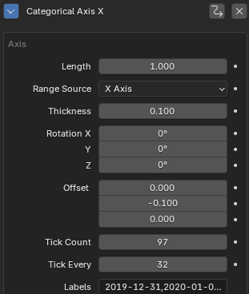
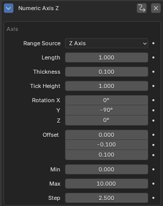
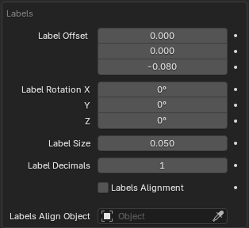
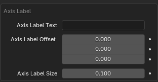
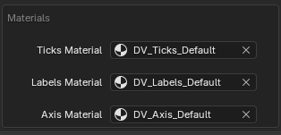

Axis
Individual axis can be added by the + button in the header with a custom configuration. For ease of use axis can be added directly in the panel for separate axis based on the created charts.
Axis Types
Numeric Axis
Display numeric values between min and max with certain step. Fully procedural, can take automatic ranges from different axis.
Categoric Axis
Display labels passed to the modifier (Labels input) on the axis with equidistant steps.

Compared to Numeric Axis, this has Tick Every and Labels inputs.
| Parameter | Description |
|---|---|
| Tick Every | How frequently tick should be created. |
| Tick Count | How many labels are present for ticks. |
| Labels | Comma separated labels. These get parsed and instantiated at individual ticks positions. Automatically populated by the addon, when creating the axis based on data. |
Range and values
Axis range is based on the Range Source parameter, for custom axis range select Custom Range and then you can tweak all the axis options. When using automatic axis, the values are taken from the Data Modifier.

Axis Parameters
| Parameter | Description |
|---|---|
| Length | Lenth of the axis. |
| Range Source | Where the source min and max is taken from. Custom Range can be used for arbitrary values. When creating axis from the addon, this is automatically set up based on the selected axis. |
| Thickness | Thickness of the axis. |
| Tick Height | Height of the individual ticks. |
| Rotation | Rotation of the axis, set automatically when axis is created from the addon. |
| Offset | Offset of the axis from the center of the chart. |
| Min | Minimum to use with Custom Range. |
| Max | Maximum to use with Custom Range. |
| Step | Numeric step of the axis - how frequent the ticks should be created. |
Labels / Ticks

| Parameter | Description |
|---|---|
| Label Offset | Offset of the labels of individual values. |
| Label Rotation | Rotate the individual labels. |
| Label Size | Size of the labels. |
| Label Decimals | Number of decimals displayed. |
| Labels Alignment | Toggle to align labels to Labels Align Object. |
| Labels Align Object | Object to what transform the labels will be aligned. |
Axis Label

| Parameter | Description |
|---|---|
| Axis Label | Text label to be displayed. |
| Axis Label Offset | Offset of the from the center. |
| Axis Label Size | Size of the label. |
Materials

| Parameter | Description |
|---|---|
| Ticks Material | Material for individual ticks. |
| Labels Material | Material for labels. |
| Axis Material | Material for the axis geometry. |